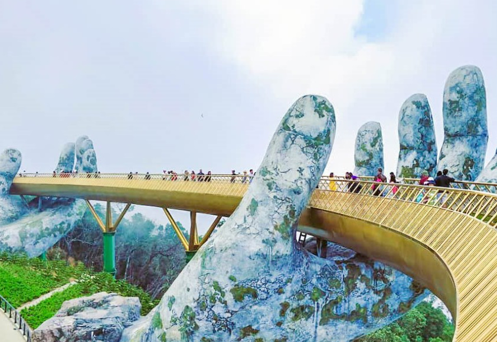

Tour Course
다낭에서의 다양한 구경거리가 있습니다.
흥부엉 거리(Hung Vuong Street)
| 다낭에서 가장 활기 넘치는 거리로 흥부엉 거리가 다낭의 중심이라고 할 수 있다. ‘베트남’ 하면 쉽게 떠올릴 수 있는 오토바이 부대 역시 이곳에선 흔한 풍경. 복잡하지만 나름의 규칙과 질서를 유지하며 도로 위를 달리는 오토바이들을 보면 저절로 사진을 찍게 된다. |
다낭 대성당(Chinh Toa Da Nang)
| 다낭 가볼만한 곳을 대표하는, 다낭 대성당. 다낭에서 유일하게 볼 수 있는 프랑스풍 건축물이다. 분홍색 외벽과 풍향계가 달린 뾰족한 첨탑은 멀리서도 한눈에 잘 보인다. 미사가 있는 일요일에만 성당 내부에 입장할 수 있다. 성당 내부의 화려한 스테인드글라스도 눈길을 사로잡는다. |
참 조각 박물관(Cham Sculpture Museum)
| 4~13세기 동안 인도차이나반도에서 번영했던 참파 왕국의 방대한 유물을 만날 수 있는 곳. 무려 300점이 넘는 전시품은 모두 프랑스 고고학 조사단이 발굴했다고 한다. 박물관은 크게 2동의 건물로 이루어져 있고, 시대와 양식별로 유물들이 전시되어 있다. 동남아 고고학에 관심이 있다면, 반드시 들러야 할 다낭 가볼만한 곳. |
응우한선 (오행산)(Ngu Hanh Son)
| 다낭 최남단에 위치한 명소, 오행산. 산 전체가 대리석으로 이루어져 ‘마블 마운틴’으로도 불린다. 현지인들은 성스러운 곳으로 칭하며 이 오행산을 경외 시 하는데, 실제로 햇볕이 스며든 내부 동굴과 마주하면 성스러운 기분이 든다. |
다낭 한시장(Han Market)
| 다낭 최대 규모의 재래시장. 현지인에게는 소중한 생필품과 식료품 시장이 되는 곳이자, 여행자에게는 멋진 기념품 시장이 되는 곳. 롯데마트, 빅씨마트와 더불어 쇼핑하기 좋은 다낭 가볼만한 곳으로 소문나있다. |

바나힐(Banahills)
| 다낭 외곽에 자리한 테마파크, 바나힐. 1,487m 고지에 자리하고 있는 곳으로 프랑스 식민 당시에 지어진 피서지이다. 세계에서 두 번째로 길다는 케이블카를 타고 바나힐로 가게 되는데, 주변 경치는 말로 표현하기 어려울 정도로 장관이다. |
호이안(Hoi An)
| 다낭을 찾은 여행자의 십중팔구가 호이안 방문을 염두에 두고 있을 것이다. 다낭의 주요 리조트에서 2-30분 정도면 아름다운 도시, 가장 ‘베트남스러운’ 도시로 분류되는 곳으로 정적인 풍광이 일품이다. ‘느림의 미학’을 제대로 배울 수 있는 좋은 기회도 될 것이다. 내원교, 풍흥고가, 복건회관 등이 주요 가볼만한 곳이다. |